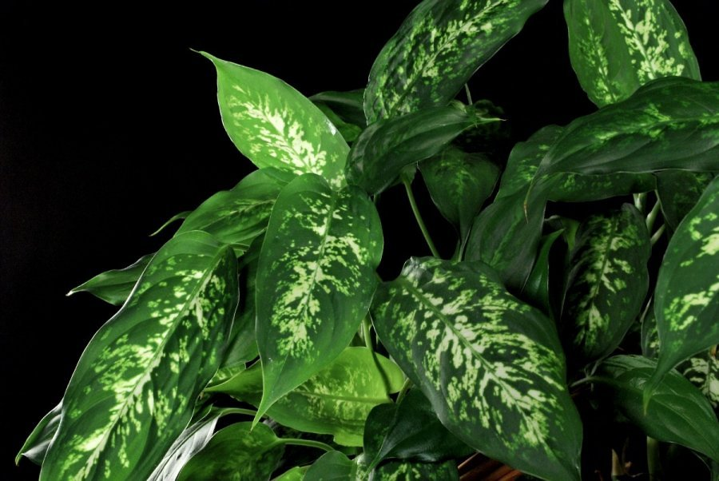

sultys
Sultys, nektarai, sulčių gėrimai | Assorti

Supratau Mūsų svetainėje naudojami slapukai, kad užtikrintume jums teikiamų paslaugų kokybę. Išjungdami šį pranešimą arba toliau naršydami šioje svetainėje sutinkate su assorti.lt privatumo politika .
menu Prekių pristatymas Atsiskaitymo būdai Taisyklės ASSORTI klubo programa pagalba@assorti.lt Kontaktai 0 0 +370 700 33311Prisijungti prie savo paskyros
Maistas ir
gėrimai
Visas maistas Gourmet kumpiai ir sūriai
Šviežia mėsa ir paukštiena
Žuvis ir žuvies gaminiai
Pieno gaminiai ir kiaušiniai
Bakalėja
Vaisiai ir daržovės
Duonos gaminiai ir konditerija
Šaldytas maistas
Kava, arbata ir kakava
Saldumynai
Nealkoholiniai gėrimai
Pasaulio virtuvės
Vaikams
Peržiūrėti viskąKūdikių ir vaikų maistas
Kūdikių ir vaikų higiena
Kūdikių priežiūra
Drabužiai ir aksesuarai
Žaislai
Kosmetika
Rodyti viskąVeido odos priežiūra
Kūno odos priežiūra
Burnos higiena
Plaukų priežiūra
Intymi higiena
Kosmetika vyrams
Sveikatos priežiūra
Kvepalai ir eteriniai aliejai
Namams
Rodyti viskąInterjerui
Virtuvės reikmenys
Buitinės chemijos prekės
Namų apyvokos reikmenys
Gyvūnų prekės
Šventinė atributika
Romero Britto aksesuarai
Sveikesnė
sudėtis
Ekologiška
Veganams
Be laktozės
Supermaistas
Be glitimo
Be pridėtinio cukraus
Alkoholiniai
gėrimai
Vynas
Šampanas, Putojantys vynai
Sidras
Alus
Stiprieji gėrimai
Akcijos
Blogas
Prekių pristatymas
Atsiskaitymo būdai
Taisyklės
ASSORTI klubo programa
Kontaktai
Sultys, nektarai, sulčių gėrimai
Assorti - Katalogas - Maistas ir gėrimai - Nealkoholiniai gėrimai - Sultys, nektarai, sulčių gėrimai Visos prekės Vanduo Vaisvandeniai Fermentuoti gėrimai Sultys, nektarai, sulčių gėrimai Nealkoholinis vynas, alus, kokteiliai Kiti gėrimaiFiltrai
Kaina
Prekės ženklas
ANDROS 1 BIG TOM 1 BIOZENTRALE 1 BJORG 1 DELIZUM 1 FUR 1 GRANTE 1 HOLLINGER 1 IAM 1 JOKER 1 MOLKEREI 1 PHILIPPINE 1 RABENHORST 1 ZUMOSOL 1Kilmės šalis
Anglija 1 Austrija 1 Azerbaidžanas 1 Brazilija 1 ES 1 Filipinai 1 Ispanija 1 Jungtiniai Arabų Emiratai 1 Jungtinė Karalystė 1 Nyderlandai 1 Pietų Afrika 1 Prancūzija 1 Vokietija 1 Šveicarija 1Savybės
Ekologiškas produktas 67 Natūralus produktas 2 Be laktozės 3 Be glitimo/gliuteno 43 Veganams 5 Vegetarams 3 Gerai Rikiuoti pagal... Pavadinimą Datą Didžiausią nuolaidą Mažiausią kainą Didžiausią kainą Naujiena Ekologiškos biodinaminės sultys FUR shot su imbieru, 60ml 1,99 € 33,17 €/l vnt. Į krepšelį Raudonųjų vynuogių, granatų ir miško uogų 100% ZUMOSOL sultys, 1 L 2,49 € 2,49 €/l vnt. Į krepšelį Ekologiškos 100% kruvinojo apelsino (Bloody Orange) sultys MOLKEREI, 500ml 3,59 € 7,18 €/l vnt. Į krepšelį Ekologiškos 100% apelsinų sultys MOLKEREI, 500ml 3,99 € 7,98 €/l vnt. Į krepšelį Ekologiškas biodinaminis mangų glotnutis FUR Funky Mango, 280ml 2,29 € 8,18 €/l vnt. Į krepšelį Ekologiškas biodinaminis uogų glotnutis FUR Holy Berry Smoothie, 280ml 2,29 € 8,18 €/l vnt. Į krepšelį Ekologiškos biodinaminės 100 % granatų sultys FUR, 330ml 4,49 € 13,61 €/l vnt. Į krepšelį Ekologiškos biodinaminės sultys FUR Antioxidants , 500ml 3,29 € 6,58 €/l vnt. Į krepšelį Ekologiškos biodinaminės sultys FUR Immune power , 500ml 3,29 € 6,58 €/l vnt. Į krepšelį Ekologiškos biodinaminės mangų ir morkų sultys FUR, 500ml 2,99 € 5,98 €/l vnt. Į krepšelį Ekologiškos biodinaminės vynuogių ir granatų sultys FUR, 500ml 2,99 € 5,98 €/l vnt. Į krepšelį Ekologiškos biodinaminės mangų, apelsinų ir pasiflorų sultys FUR, 500ml 2,99 € 5,98 €/l vnt. Į krepšelį Ekologiškos biodinaminės sultys FUR shot su imbieru ir ciberžole, 60ml 1,99 € 33,17 €/l vnt. Į krepšelį Ekologiškos citrinų sultys BIOZENTRALE, 250ml 2,49 € 9,96 €/l vnt. Į krepšelį Ekologiškos žaliųjų citrinų sultys BIOZENTRALE, 250ml 3,49 € 13,96 €/l vnt. Į krepšelį Ekologiškos citrinų ir imbiero sultys BIOZENTRALE, 250ml 5,99 € 23,96 €/l vnt. Į krepšelį Ananasų sultys JOKER 100%, 1L 2,49 € 2,49 €/l vnt. Į krepšelį Apelsinų sultys JOKER 100%, 1L 2,79 € 2,79 €/l vnt. Į krepšelį Obuolių nektaras ZUMOSOL, 200ml 0,79 € 3,95 €/l vnt. Į krepšelį Persikų nektaras ZUMOSOL, 200ml 0,79 € 3,95 €/l vnt. Į krepšelį Ananasų-vynuogių nektaras ZUMOSOL, 200ml 0,79 € 3,95 €/l vnt. Į krepšelį Ekologiškos raudonųjų vynuogių, granatų ir miško uogų ZUMOSOL sultys, 1L 3,99 € 3,99 €/l vnt. Į krepšelį Apelsinų-mėlynių sulčių gėrimas ZUMOSOL, 1L 2,59 € 2,59 €/l vnt. Į krepšelį Apelsinų-braškių sulčių gėrimas ZUMOSOL, 1L 2,99 € 2,99 €/l vnt. Į krepšelį Apelsinų-gvajavų sulčių gėrimas ZUMOSOL, 1L 2,59 € 2,59 €/l vnt. Į krepšelį Apelsinų-morkų sulčių gėrimas ZUMOSOL, 1L 2,59 € 2,59 €/l vnt. Į krepšelį Ekologiškos apelsinų sultys DELIZUM, 200ml 1,49 € 7,45 €/l vnt. Į krepšelį Ekologiškos apelsinų sultys DELIZUM, 750ml 3,99 € 5,32 €/l vnt. Į krepšelį Ekologiškos vaisių sultys ACE DELIZUM, 750ml 3,99 € 5,32 €/l vnt. Į krepšelį Ekologiškos raudonųjų vynuogių sultys DELIZUM ne iš koncentrato, 1L 5,49 € 5,49 €/l vnt. Į krepšelį Ekologiškos apelsinų sultys DELIZUM ne iš koncentrato, 1L 5,49 € 5,49 €/l vnt. Į krepšelį Ekologiškos burokėlių sultys DELIZUM, 750ml 4,49 € 5,99 €/l vnt. Į krepšelį Ekologiškos mėlynių sultys DELIZUM, 750ml 9,99 € 13,32 €/l vnt. Į krepšelį Ekologiškos spanguolių sultys DELIZUM, 750ml 9,99 € 13,32 €/l vnt. Į krepšelį Ekologiškos morkų ir alavijų sultys DELIZUM, 200ml 1,49 € 7,45 €/l vnt. Į krepšelį Ekologiškos morkų ir alavijų sultys DELIZUM, 750ml 3,99 € 5,32 €/l vnt. Į krepšelį Ekologiškos obuolių ir alavijų sultys DELIZUM, 200ml 1,49 € 7,45 €/l vnt. Į krepšelį Ekologiškos obuolių ir alavijų sultys DELIZUM, 750ml 3,99 € 5,32 €/l vnt. Į krepšelį Ekologiškas žaliųjų slyvų nektaras DELIZUM, 750ml 3,99 € 5,32 €/l vnt. Į krepšelį Ekologiškos baltųjų vynuogių sultys DELIZUM, 750ml 3,99 € 5,32 €/l vnt. Į krepšelį Ekologiškos pomidorų sultys DELIZUM, 200ml 1,49 € 7,45 €/l vnt. Į krepšelį Ekologiškos pomidorų sultys DELIZUM, 750ml 3,99 € 5,32 €/l vnt. Į krepšelį Ekologiškos greipfrutų sultys DELIZUM, 750ml 3,99 € 5,32 €/l vnt. Į krepšelį Ekologiškos abrikosų sultys DELIZUM, 200ml 1,49 € 7,45 €/l vnt. Į krepšelį Ekologiškos tropinių vaisių sultys DELIZUM, 750ml 3,99 € 5,32 €/l vnt. Į krepšelį Ekologiškos persikų ir baltųjų vynuogių sultys DELIZUM, 200ml 1,49 € 7,45 €/l vnt. Į krepšelį Ekologiškos persikų ir baltųjų vynuogių sultys DELIZUM, 750ml 3,99 € 5,32 €/l vnt. Į krepšelį Ekologiškos viduržemio jūros sultys DELIZUM, 200ml 1,49 € 7,45 €/l vnt. Į krepšelį Rodyti po: 12 24 48 100 1 2 Verkių g 29B, „ Ogmios miestas “ , Vilnius Parduotuvė Tel: +370 687 13979 El.paštas: parduotuve.ogmios@assorti.lt I-VII: 10:00 - 20:00Saltoniškių g. 9, PC „ Panorama “ ,
Vilnius Parduotuvė Tel: +370 688 30490 El. paštas: panorama@assorti.lt I-V I : 10 :00 - 22:00
VII: 10:00 - 21:00 Tel.: +370 700 33311 El. p.: pagalba@assorti.lt Konsultuojame visomis dienomis
nuo 9:00 iki 19:00
Kontaktai Apie Assorti Prekių pristatymas Atsiskaitymo būdai Taisyklės Privatumo politika ASSORTI klubo programa Dovanų čekis Karjera Facebook Instagram UAB Assorti 2020 Sprendimas: ELECTRONIC LAB Bendra suma: 0 € Peržiūrėti krepšelį
Įdėjus prekes į krepšelį, jos pasirodys čia.
Užsakymų istorijaPosted by Jack  Read more
Read more  Comments (15)
Comments (15)  2020.10.29 08:18
2020.10.29 08:18